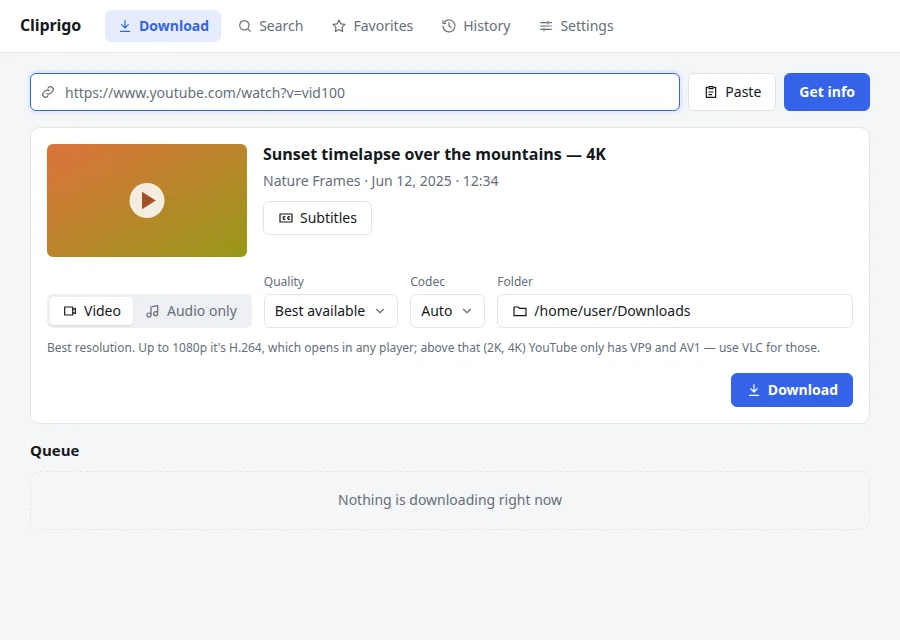
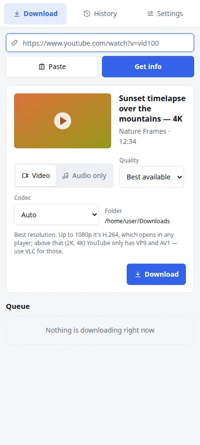
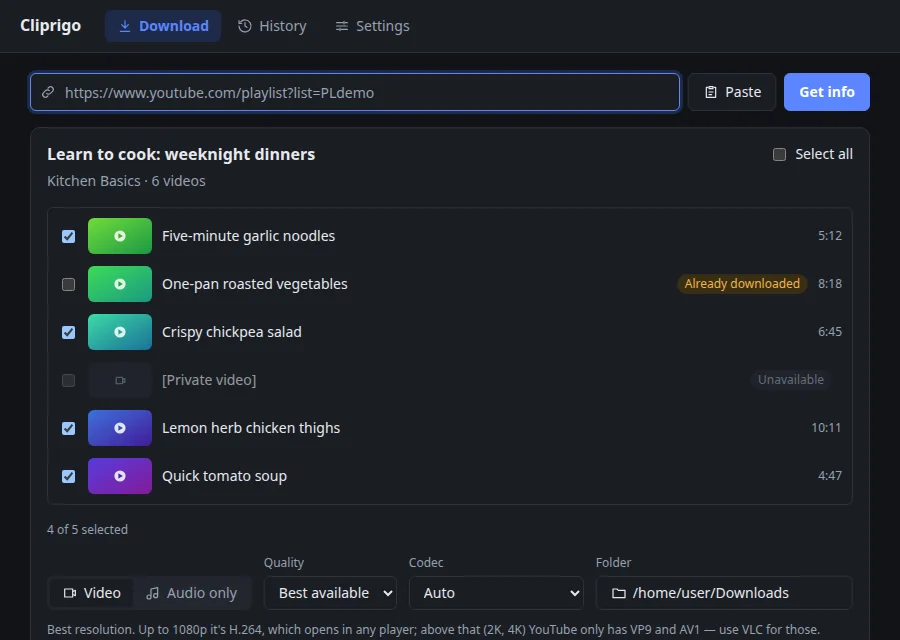
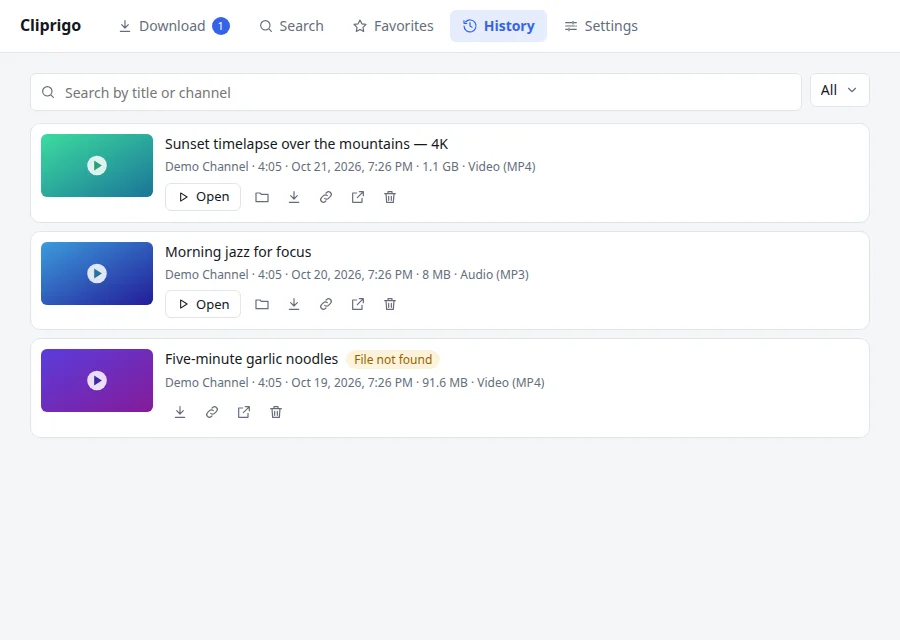
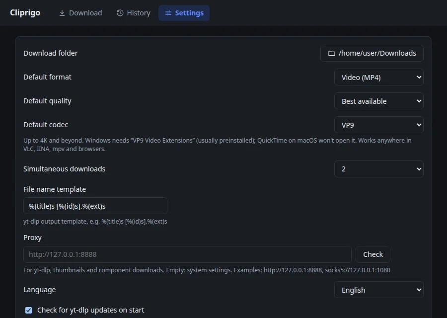

4K, 1080p, 720p or MP3
Best quality MP4, an exact resolution, or audio only as MP3 or M4A. The quality goes into the file name, so versions never overwrite each other.
Paste a link, pick a quality and save it — from 4K video to an MP3. Cliprigo keeps a history of everything you downloaded, so nothing gets lost.
Latest version v0.1.5 · No ads, no account


A friendly app on top of yt-dlp, the most reliable YouTube downloader. No command line, nothing to set up.
Best quality MP4, an exact resolution, or audio only as MP3 or M4A. The quality goes into the file name, so versions never overwrite each other.
Open a playlist or a channel and tick the videos you want. Ones you already have are marked and unchecked.
Several downloads at once with live progress, speed and time left. Canceling cleans up partial files.
Search, filter by status and open files in a click. Thumbnails work offline; retry or download again any time.
Choose H.264 for any player, AV1 for the smallest files, or VP9 — with a hint on where each one plays.
Downloads yt-dlp and ffmpeg for you, checks their checksums and updates yt-dlp when YouTube changes.
A warning before you download a video that's already in your history or in the queue.
No account, no ads. The code is on GitHub under the MIT license. English and Russian, light and dark theme.
Three steps, about ten seconds.
Copy a video, playlist or channel link from YouTube and paste it into Cliprigo.
Video or audio only, the quality you need, and a folder if you like.
Watch the progress in the queue. The file lands in your Downloads folder and stays in the history.
A clean interface that follows your system's light or dark theme.



The same app on your phone — no root and no Google account needed.
Free for every system. Version v0.1.5.
x64 and ARM64
Yes. Cliprigo is free and open source under the MIT license. There are no ads, no accounts and no paid features.
The builds are not code-signed yet, so the system shows a warning on first launch.
Windows: “Windows protected your PC” → More info → Run anyway.
macOS: System Settings →
Privacy & Security →
Open Anyway, or run
xattr -dr com.apple.quarantine
/Applications/Cliprigo.app
in Terminal.
Download the arm64 APK (or armv7 for older phones), open it and allow installing apps from your browser or file manager when asked. Android 11 or newer is required.
MP4 video in the best available quality or a chosen resolution such as 4K, 1440p, 1080p or 720p, with an H.264, AV1 or VP9 codec, and audio only as MP3 or M4A.
YouTube distrusts some networks such as VPNs, hosting providers and some proxies. Try again later or from another network.
In your Downloads folder by default; you can choose another folder in Settings. On Android files go to Download/Cliprigo.
Free, open source and ready in a minute.